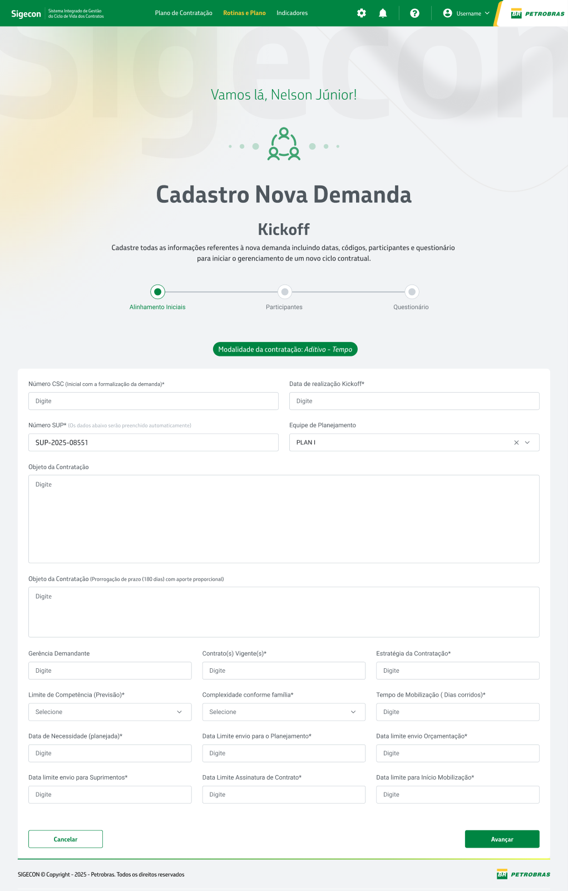
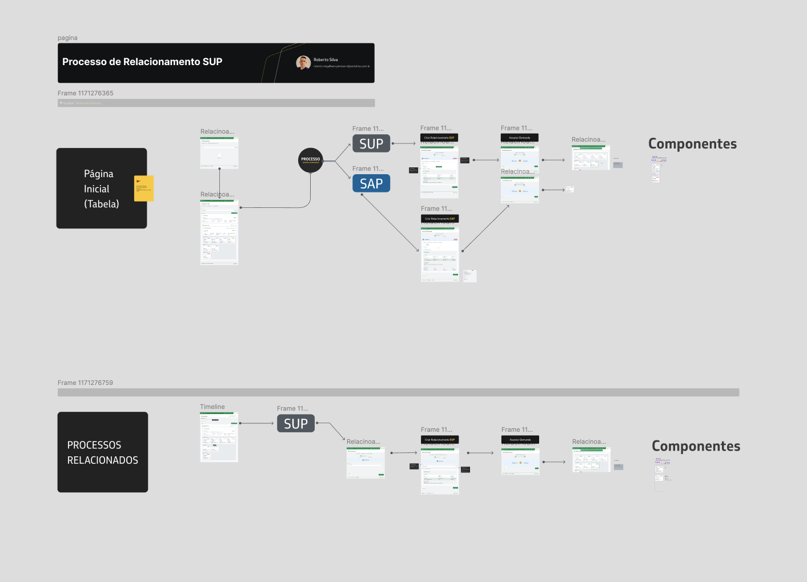
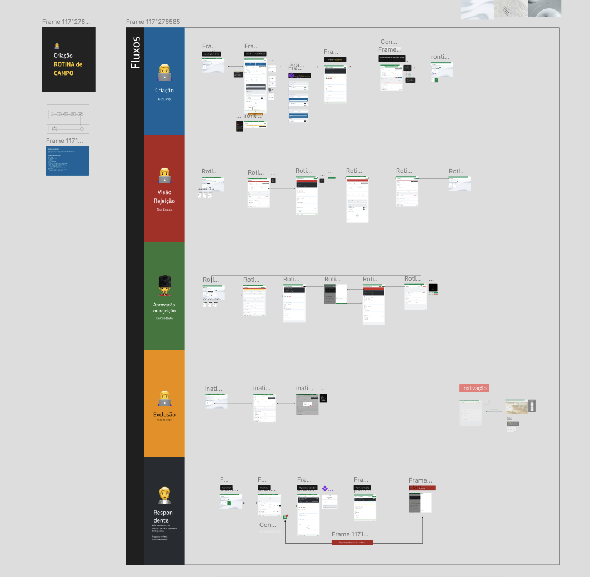
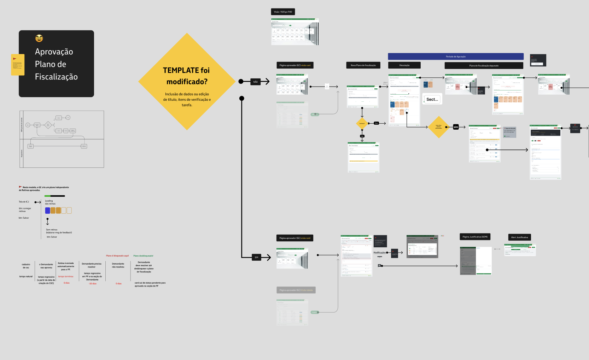
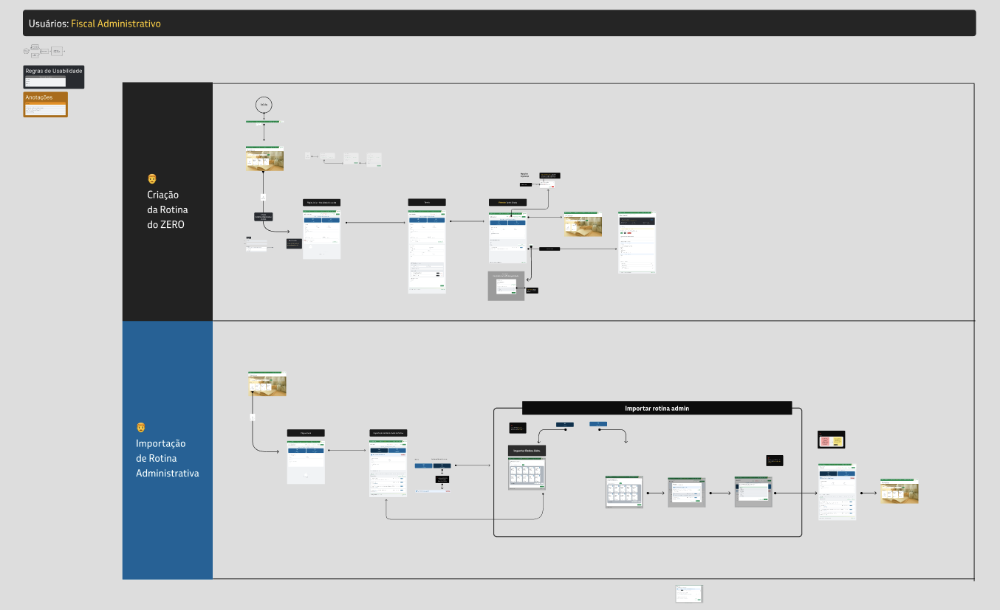
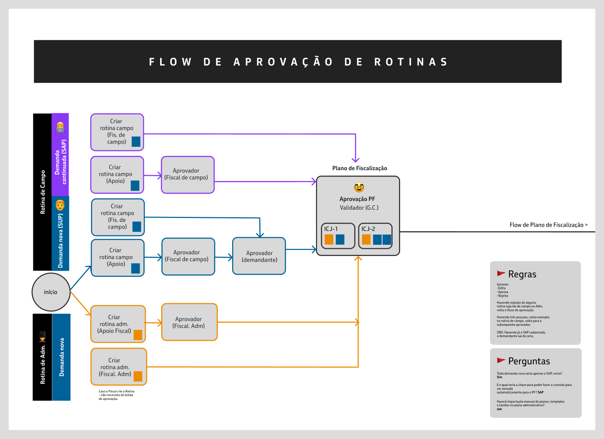
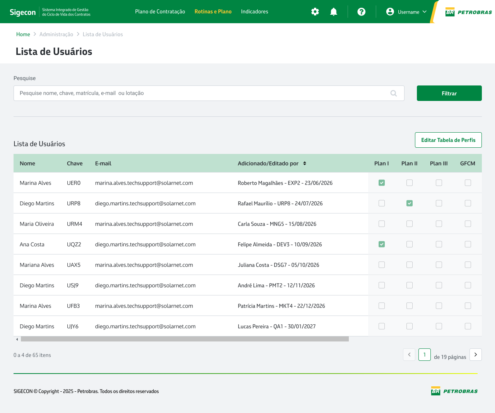
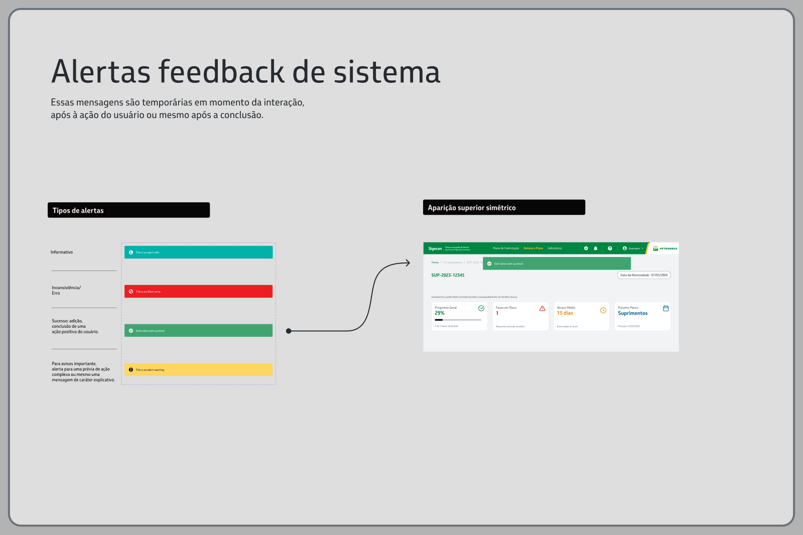

Case studyCase
SIGECON: Contract lifecycle management SIGECON: Gestão do ciclo de vida de contratos
GoalObjetivo
SIGECON is Petrobras' integrated system for managing the life cycle of contracts, from the first planning spreadsheet to the day-to-day inspection in the field. Before it, each team tracked demands, deadlines and approvals in its own way, and nobody had the full picture of a contract. O SIGECON é o sistema integrado da Petrobras para gerir o ciclo de vida dos contratos, da primeira planilha de planejamento até a fiscalização no dia a dia. Antes dele, cada equipe acompanhava demandas, prazos e aprovações do seu jeito, e ninguém tinha a visão completa de um contrato.
The goal was to turn that scattered process into one guided flow: who creates, who approves, what gets blocked and who can unblock it, all with clear feedback at every step. O objetivo foi transformar esse processo disperso em um único fluxo guiado: quem cria, quem aprova, o que é bloqueado e quem pode desbloquear, sempre com feedback claro a cada passo.
Process & screensProcesso e telas







